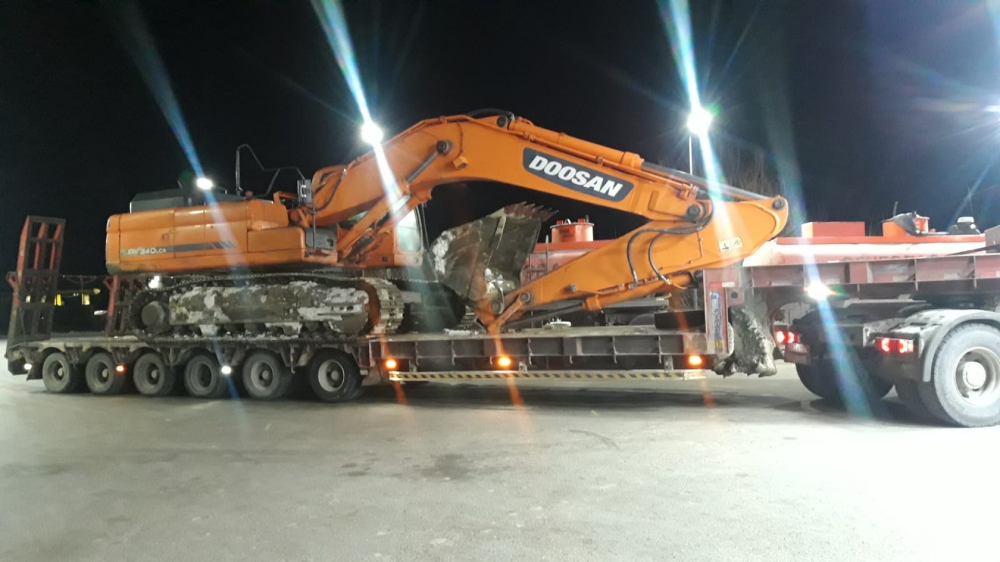

Трал
Возит то, что не едет само
Низкорамная площадка опущена почти до дороги — на неё заходит гусеничная и колёсная техника: экскаватор, погрузчик, каток. Заезд по трапам сзади, крепление на площадке.
Global Express · грузоперевозки
Возим грузы по Усть-Каменогорску, по Казахстану и за пределы страны. Отдельно сдаём тралы и автовозы.
Ниже — три масштаба и техника
Масштаб
Диван по городу и фура из-за границы — это разные машины, разные документы и разный разговор. Выберите масштаб: карта и описание поменяются.
Городская перевозка — это подача машины к подъезду или к воротам склада. Груз едет несколько километров, но грузят и разгружают его так же, как на межгороде.
Междугородная перевозка начинается в Усть-Каменогорске и заканчивается в другом городе страны. Здесь считают не адрес, а километры и вес.
Международная перевозка добавляет к маршруту границу: документы на груз, пункт пропуска и оформление. Это отдельное направление работы, а не «дальний межгород».
Аренда техники
Две машины, которые ищут отдельно от «грузоперевозок». Трал везёт то, что не поедет само. Автовоз везёт то, что поехало бы, но не должно.
Трал
Низкорамная площадка опущена почти до дороги — на неё заходит гусеничная и колёсная техника: экскаватор, погрузчик, каток. Заезд по трапам сзади, крепление на площадке.
Автовоз
Машины поднимают на два яруса и крепят ремнями за колёса. Автомобиль приезжает с тем же пробегом, с каким уехал, — он всю дорогу стоит.

Как работаем
Как найти